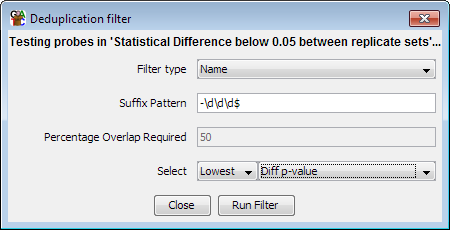

The deduplication filter is designed to remove redundancy in a probe list. It can do this in one of two ways, either by comparing the names of probes and merging those with a common prefix, or by looking for overlaps between probes and merging those with a high enough degree of overlap.
Where duplicates are detected you can choose which one to keep by either selecting on the length of the probes, or by using the annotated value on the probe list you are deduplicating.
The most common use of this filter would be reducing a set of transcript probes to a minimal set by removing additional splice variants, leaving only one variant per gene. The default name filter is set up to do this using the naming convention used by Ensembl (gene-123, where 123 is a transcript identifier).
